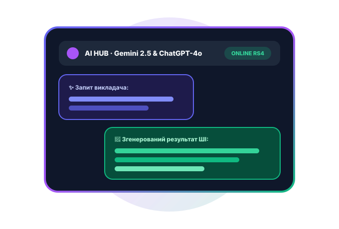

Ласкаво просимо до Teacher Portal Pro v3.1 (build 211) RS4 — посиленої освітньої платформи ВСП «Стрийський фаховий коледж ЛНУП». ШІ-асистент Gemini & ChatGPT для викладача, голосові нотатки й конспекти до дисциплін, інтерактивний тренажер студента, радарна аналітика та 8 тем із зображеннями. Автор на головній та в загальному: Максим Ковалишин.
Gemini & ChatGPT для викладача Голосові нотатки й конспекти Тренажер і флеш-картки студента 8 анімованих тем із зображеннями
ШІ-асистент RS4Gemini & ChatGPT · Активно
Нові можливостіv3.1 (build 211) RS4ULTIMATE RS4
МИТТЄВИЙ ДОСТУП · АВТОМАТИЧНА АВТОРИЗАЦІЯ RS4
Два потужні простори — один клік до старту.
Натисніть кнопку «Викладач» або «Студент» — система автоматично підставить логін і пароль та відкриє оновлений кабінет версії v3.1 (build 211) RS4.
Для здобувачів освіти · К-41
Кабінет студента · Нотатки, Голосові й Тренажер
Пишіть текстові конспекти й записуйте голосові повідомлення до дисциплін, тренуйтеся на інтерактивних тестах і 3D флеш-картках, моделюйте оцінки та здавайте роботи.
Письмові конспекти та голосові повідомлення до дисциплін
Тренажер-вікторина, 3D флеш-картки та пісочниця коду
Симулятор оцінок, шкала ЄКТС та бейджі досягнень

Для викладачів та адміністраторів
Кабінет викладача · Gemini/ChatGPT та Аналітика
Інтегрований пошуковий і генеративний запит до Gemini або ChatGPT для створення завдань і тестів, прослуховування голосових від студентів, радарна діаграма та розумний журнал.
Пошуковий ШІ-хаб Gemini & ChatGPT для генерації завдань
Прослуховування голосових нотаток і перевірка робіт у 1 клік
Радар компетентностей, гістограма ЄКТС та 2-рядкові підсумки таблиць
ІНТЕРАКТИВНИЙ ОГЛЯД ФІШОК · v3.1 (build 211) RS4
Повний арсенал інновацій релізу RS4
Перемикайте вкладки нижче, щоб дослідити ШІ-асистента викладача, голосові нотатки студентів, тренажер, хмарне сховище та розумні таблиці.
ВІЗУАЛЬНА ПЕРСОНАЛІЗАЦІЯ · 8 HD ТЕМ
Вісім тем із зображеннями та живою анімацією
Обирайте між класичними та новими ексклюзивними темами релізу RS4 («Квітуча Сакура» та «Королівський Онікс і Золото»).
ЧОМУ ВЕРСІЯ v3.1 (build 211) RS4 НАЙПОТУЖНІША
Штучний інтелект, голос та хмарна аналітика.
Платформа поєднує зручність миттєвої авторизації, голосові та текстові конспекти до дисциплін, пошуковий ШІ-запит Gemini / ChatGPT у кабінеті викладача та глибоку хмарну телеметрію в розділі «Додатково».
Пошуковий ШІ Gemini & ChatGPT
Голосові повідомлення та нотатки
Інтерактивний тренажер і тести
Радар компетентностей і ЄКТС
АВТОРСЬКІ ПРАВА ТА КОМАНДА ПРОЄКТУ · v3.1 (build 211) RS4
Автор (головна сторінка і в загальному): Максим Ковалишин
Добірка лекцій, практичних, презентацій і контрольних. До кожного матеріалу студент може створити текстову нотатку або прикріпити голосове повідомлення.
Натисніть «Конспект / Голосове» на будь-якій картці матеріалу, щоб додати власну нотатку чи аудіозапис до цієї теми.
ОСОБИСТИЙ ПРОСТІР ЗДОБУВАЧА ОСВІТИ · v3.1 (build 211) RS4
Мій кабінет студента
Персональний журнал, текстові та голосові нотатки до дисциплін, інтерактивний тренажер знань, симулятор балів і здача робіт.
Студент · RS4
НАВЧАЛЬНИЙ СЕМЕСТР · РЕЙТИНГ ГРУПИ
Навчайся, тренуйся та надсилай голосові нотатки.
Використовуйте інтерактивний тренажер із флеш-картками, записуйте голосові коментарі до дисциплін і моделюйте свій стипендіальний бал.
Мої нотатки до дисциплін та голосові повідомлення викладачу
Створюйте письмові конспекти до лекцій і практичних або записуйте та відправляйте голосові нотатки безпосередньо в кабінет викладача
Текст + Голос · RS4
Збережені нотатки та відправлені голосові (0)
Центр тренування та самопідготовки студента (Training Arena RS4)
Тренуйте знання перед контрольними роботами: інтерактивні тести з поясненнями, 3D флеш-картки термінів та жива пісочниця коду
⚡ Досвід тренувань: 120 XPТренажер v3.1
🧠 Експрес-тренажер (Тест із дисципліни)
0 / 5
🃏 Навчальні 3D Флеш-картки
1 / 6
💻 Жива пісочниця HTML/CSS для тренування
Мій журнал успішності та порівняння з групою
Ваші поточні бали, прогрес за категоріями та відхилення від середнього бала групи К-41
12-бальна система · ЄКТС
Симулятор майбутньої оцінки
Дізнайтеся, як наступна оцінка вплине на ваш семестровий бал
Фішка v3.1 RS4
Практичні та контрольні завдання (Здача робіт)
Позначте виконані роботи, щоб надіслати їх у панель викладача на перевірку
Інтерактивно
Оголошення викладача та розклад
Актуальні повідомлення від Тетяни Гаркот та розклад групи К-41
Live-синхронізація
Розклад занять (Вебтехнології та вебдизайн)
ПН · 2 параЛекція · ауд. 304Тетяна Гаркот
СР · 3 параПрактична робота · Лаб. ВТ-2Підгрупа 1 та 2
ПТ · 15:00Онлайн-консультація та захист робітTeacher Portal Pro
Мої досягнення та навчальні нагороди
Автоматично відкриваються на основі ваших оцінок, тренувань і зданих робіт
Гейміфікація навчання
МОДЕРНІЗОВАНА ПАНЕЛЬ ТА ОБЛІКОВИЙ ЗАПИС ВИКЛАДАЧА · v3.1 (build 211) RS4
Інтегрування електронного журналу, оцінок, голосових нотаток та статистики в хмарне сховище
Архітектура v3.1 RS4
1. Перехід від локального зберігання до хмарної БД
У базових навчальних прототипах оцінки зберігаються у локальному сховищі браузера (localStorage). Проте для повноцінної роботи освітнього закладу необхідна хмарна синхронізація (Cloud Storage & Realtime Database). При інтеграції електронного журналу у хмару кожна виставлена викладачем оцінка миттєво передається через захищений REST/GraphQL або WebSocket-канал до централізованого сховища (PostgreSQL / Supabase, Firebase Cloud Firestore або AWS Aurora).
Завдяки цьому студент бачить оновлений бал, голосовий коментар викладача і перерахований рейтинг у своєму особистому кабінеті зі смартфона чи ноутбука вже за частки секунди після збереження у журналі викладача.
2. Хмарна агрегація оцінок, медіани та статистики
Хмарне сховище відповідає не лише за збереження клітинок таблиці, а й за автоматичне обчислення аналітичних метрик на стороні сервера (Edge Functions):
Середній бал та медіана за категоріями: окремий розрахунок середніх показників за лекції (Л1–Л3), практичні (П1–П3) та контрольні роботи (К1–К2).
Якість знань та абсолютна успішність: автоматичне визначення частки оцінок високого (10–12 б.) та достатнього (7–9 б.) рівнів, конвертація у шкалу ЄКТС (A, B, C, D, E, FX) та побудова радарної матриці компетентностей.
Мультимедійні конспекти та голосові: аудіозаписи студентів зберігаються у хмарному об'єктному сховищі (Cloud Blob Storage), а в таблицю журналу записується лише компактне мета-посилання.
3. Кібербезпека, ролі (RBAC) та резервні копії
При хмарній інтеграції розмежування прав доступу між ролями «Викладач», «Адміністратор», «Модератор» та «Студент» виконується на рівні серверних токенів авторизації (JWT / OAuth 2.0) і правил безпеки бази даних (Row-Level Security):
Студент має право читання (SELECT) виключно власних оцінок, рейтингу та публічних оголошень курсу, а також право надсилати практичні роботи, текстові конспекти й голосові нотатки.
Викладач та Адміністратор мають верифіковане право запису (INSERT / UPDATE) у таблицю оцінок, використання ШІ-генератора завдань і формування зведеної відомості.
Автоматичний бекап: хмарне сховище щодня формує незмінні знімки журналу (Snapshots) із перевіркою контрольної суми SHA-256.
4. Інтеграція ШІ-асистентів (Gemini / ChatGPT) із хмарним журналом
У релізі v3.1 (build 211) RS4 хмарна статистика групи агрегується у знеособлений аналітичний вектор, який подається до ШІ-моделі (Google Gemini або OpenAI ChatGPT). Це дозволяє автоматично виявляти теми, які викликали найбільше труднощів у студентів, і миттєво генерувати додаткові тренувальні тести та індивідуальні рекомендації.
Матеріал підготовлено в межах посиленого релізу v3.1 (build 211) RS4. Куратор розділу та модератор: Христина Небещанська. Головний автор порталу: Максим Ковалишин.
ПРО НАВЧАЛЬНИЙ ПРОЄКТ · v3.1 (build 211) RS4
Teacher Portal Pro
Посилена освітня платформа версії v3.1 (build 211) RS4 з інтеграцією ШІ-запитів Gemini/ChatGPT, голосовими нотатками, тренажером студента, хмарною синхронізацією журналу та 8 темами із зображеннями.
Автори, авторські права та команда розробників
МК
Адмін: Максим КовалишинАвтор проєкту (на головній сторінці і в загальному) · Системна архітектура
Це локальний навчальний прототип із симулятором хмарного сховища, ШІ-асистентом та голосовими нотатками. Реєстраційні профілі, оцінки, нотатки й плани зберігаються у localStorage цього браузера.